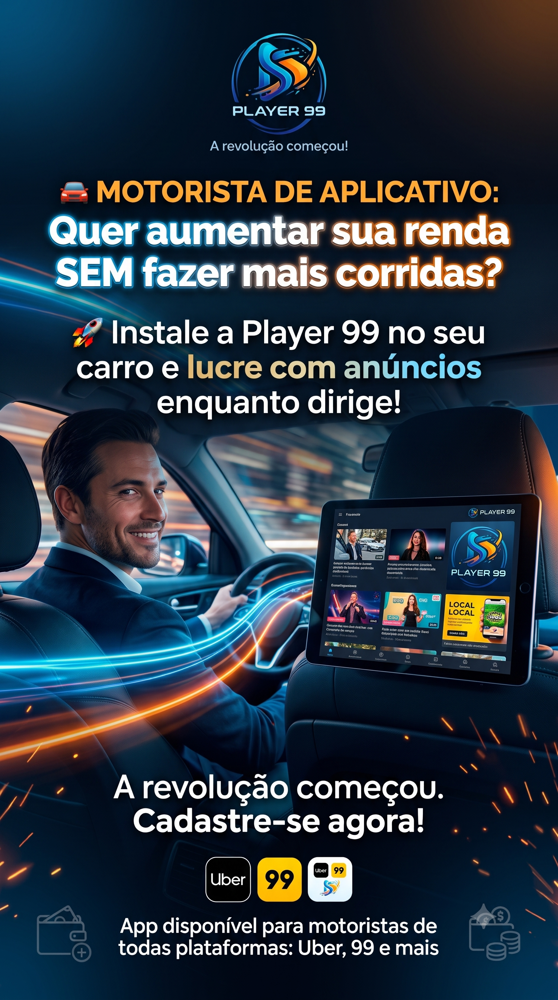
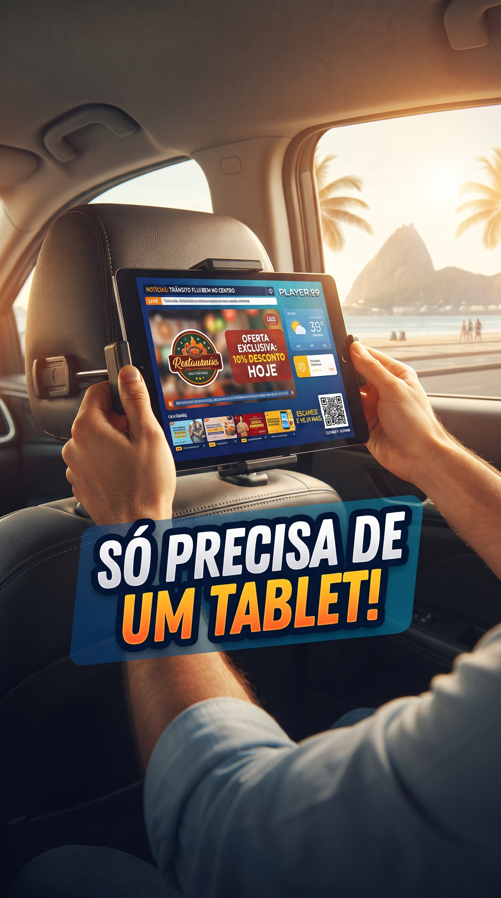
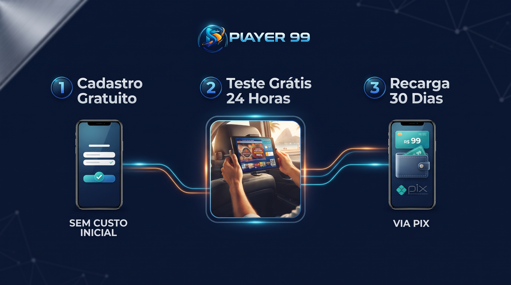
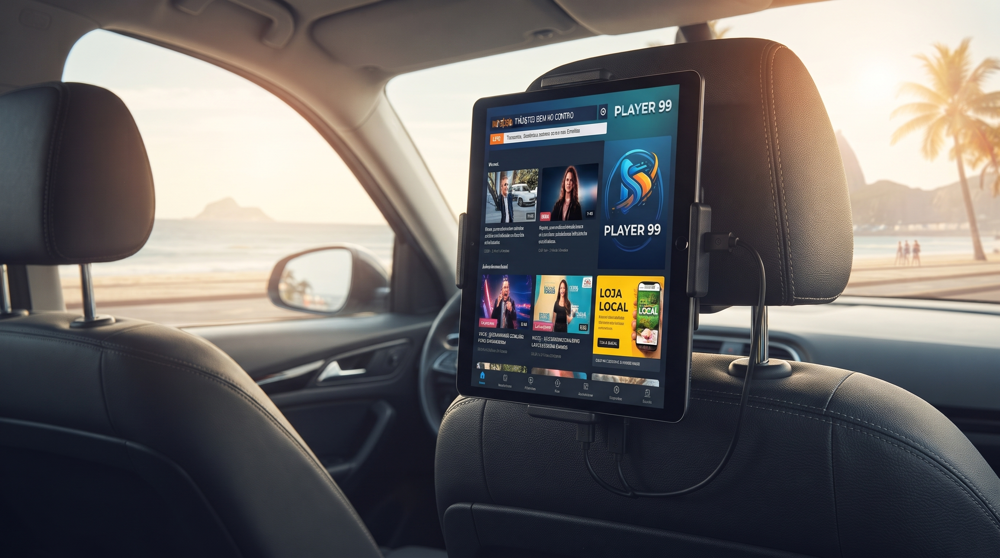
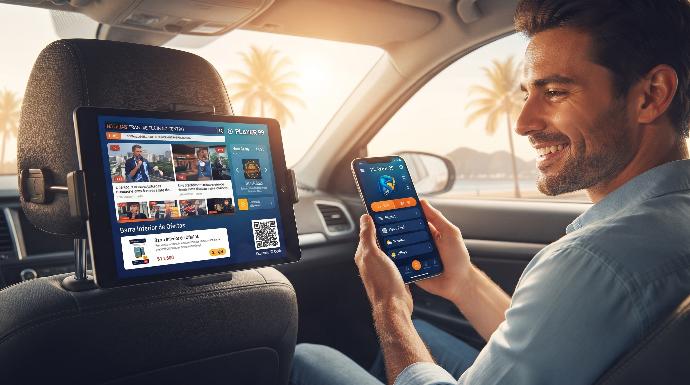
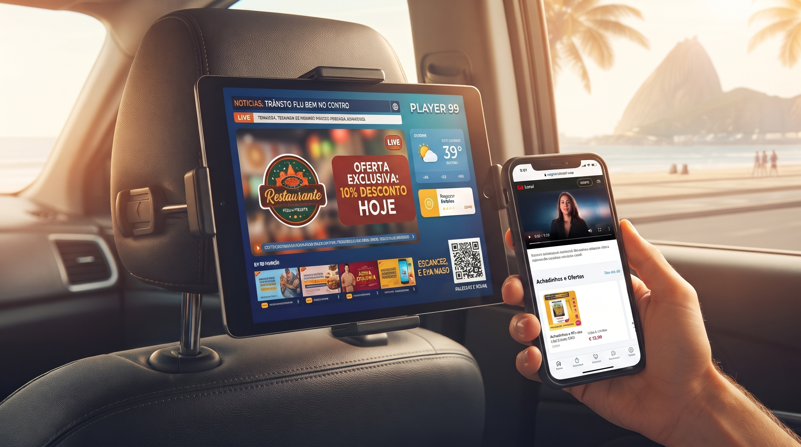
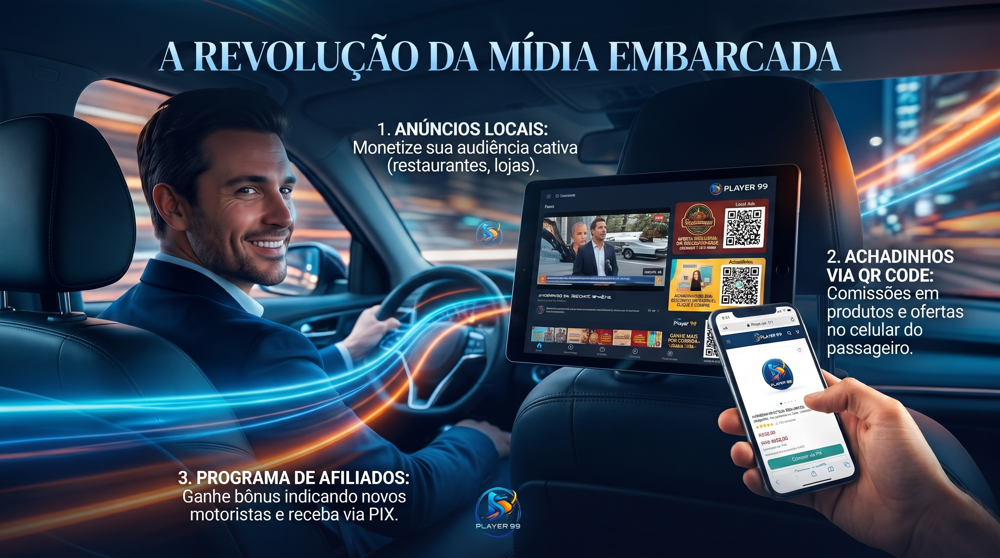
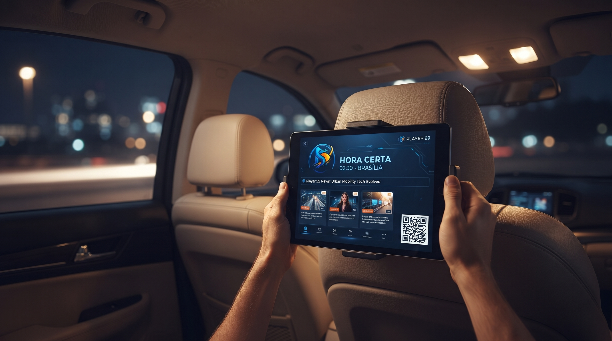
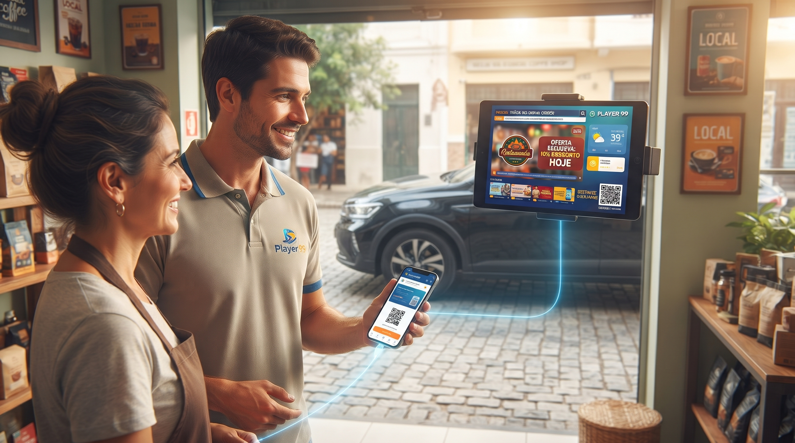

O Guia Definitivo da Player 99 para Motoristas Empreendedores Monetizarem Suas Corridas no Piloto Automático


Se você dirige diariamente — seja na Uber, na 99, na inDrive, no táxi ou no transporte particular —, você já conhece perfeitamente a matemática tradicional do transporte urbano de passageiros. Essa matemática é implacável: para ganhar mais dinheiro no fim do mês, você precisa rodar mais quilômetros, passar mais horas preso no trânsito, gastar mais combustível (ou energia elétrica), acelerar a depreciação do seu veículo e sacrificar o tempo com a sua família.
Durante anos, essa foi a única equação disponível para quem vive do volante. O seu faturamento sempre esteve limitado por dois fatores que você não controla: o relógio (afinal, o dia só tem 24 horas e o corpo humano exige descanso) e o algoritmo dos aplicativos, que dita o valor das tarifas dinâmicas e as taxas de repasse.
Mas existe um ativo valioso dentro do seu veículo que, até hoje, provavelmente ficou 100% ocioso em todas as milhares de corridas que você já realizou: o espaço exatamente à frente dos olhos do seu passageiro.
No mercado publicitário global, um dos segmentos que mais cresce é o DOOH (Digital Out-Of-Home) — a mídia digital exibida fora de casa, em elevadores, academias, clínicas, shoppings e transportes públicos. Grandes empresas investem milhões todos os anos para colocar telas digitais onde existem pessoas paradas, aguardando algum serviço.
Agora, pare e analise o ambiente interno do seu carro sob a ótica de um estrategista de negócios:
Quando você instala um tablet no encosto de cabeça e conecta esse equipamento à plataforma Player 99, você deixa de vender apenas o deslocamento físico de um ponto A para um ponto B. Você passa a operar uma estação de mídia embarcada. O seu carro continua fazendo exatamente as mesmas rotas, nos mesmos horários, sem exigir que você rode um único quilômetro a mais — mas agora cada viagem trabalha por você em dobro.
Sempre que surge uma nova oportunidade tecnológica no setor de mobilidade urbana, é natural surgirem dúvidas. Antes de avançarmos para os 10 passos práticos deste livro, precisamos eliminar três crenças limitantes que costumam travar quem está começando:
Totalmente falso. O nome Player 99 faz referência direta à filosofia de acessibilidade do sistema (como o valor simbólico de R$ 99 para manter uma tela ativa por 30 dias completos). A plataforma é 100% independente e foi projetada para motoristas de Uber, 99, inDrive, táxis de qualquer cidade e motoristas particulares.
Você não precisa criar software do zero, não precisa contratar designers e não precisa investir milhares de reais em hardware proprietário. O sistema roda diretamente no navegador de qualquer tablet Android ou iOS que você já tenha em casa (ou que adquira por um valor acessível), funcionando tanto na posição horizontal quanto na vertical. Todo o gerenciamento é feito pelo seu celular com cliques simples.
Na Player 99, o risco inicial é zero. Você realiza o cadastro gratuito, configura sua primeira playlist e ativa um teste grátis de 24 horas para ver a tela funcionando ao vivo dentro do seu carro e observar a reação dos seus passageiros. Você só recarrega os créditos de 30 dias (R$ 99) depois de validar o funcionamento na prática.
Este e-book não foi escrito para ser lido de forma passiva e esquecido na memória do seu celular. Ele foi estruturado como um manual operacional de negócios dividido em 10 capítulos completos, correspondentes aos 10 passos fundamentais para construir, ativar, monetizar e escalar a sua operação de mídia embarcada.
Em cada capítulo, você encontrará:
Você já possui o veículo, já conhece as ruas da sua cidade e já transporta centenas de pessoas todos os meses. Agora, você terá nas mãos o método completo para transformar o banco de trás do seu carro em um negócio lucrativo, automatizado e escalável.
Se você dirige diariamente nas ruas da sua cidade, sabe que o trabalho exige resistência física, atenção constante no trânsito e domínio emocional diante das variações do dia. Durante anos, o mercado de mobilidade urbana colocou o motorista diante de uma lógica simples e rígida: você ganha de acordo com o tempo que passa ao volante e com as corridas que consegue aceitar. Quando o movimento cai ou o preço do combustível aperta, a saída mais comum costuma ser estender a jornada.
A Player 99 nasce justamente para alterar essa equação sem exigir que você transforme sua rotina de direção em algo mais pesado. A plataforma é uma solução de mídia DOOH (Digital Out-Of-Home) e entretenimento embarcado que transforma carros de aplicativo, táxis e veículos de transporte particular em vitrines digitais interativas por meio de tablets instalados no encosto de cabeça dos bancos dianteiros.
Entender a sua virada de chave significa enxergar além do volante. Você continua sendo o profissional que conduz o veículo com segurança e atenção, mas passa a operar também um canal de mídia embarcada. Em vez de deixar o banco traseiro apenas como um espaço passivo de deslocamento, você passa a oferecer entretenimento, informação e ofertas interativas enquanto o passageiro está a bordo.
No marketing e na mídia urbana, existe uma diferença enorme entre exposição passageira e atenção cativa. Um cartaz em um poste ou um banner rápido na rua disputa o olhar de quem passa apressado, muitas vezes ao celular ou focado no próprio caminho. Já dentro de um carro em movimento, o cenário é outro.
O passageiro senta no banco de trás, acomoda-se e tem o encosto do banco dianteiro bem à frente do campo de visão. Durante um trajeto urbano — que pode durar 10, 20 ou 35 minutos —, ele está ali, em deslocamento, sujeito a engarrafamentos, semáforos e pausas naturais. Quando a tela exibe notícias ao vivo, rádio, informações úteis e ofertas com QR Code, ela dialoga com esse tempo de trajeto de forma natural e integrada.
Quando um passageiro entra em um veículo e encontra uma tela organizada, com conteúdo dinâmico, notícias atualizadas e ambiente agradável, a percepção sobre aquela corrida muda. O carro deixa de parecer "apenas mais uma viagem" e passa a transmitir cuidado, modernidade e atenção aos detalhes.
Essa melhoria na experiência funciona a favor do motorista em duas frentes:
O grande gargalo financeiro de quem vive da direção é que quase todo ganho tradicional exige rodar mais, gastar mais energia ou combustível e desgastar mais o carro. Na mídia embarcada com a Player 99, a lógica de monetização acontece em cima das corridas que você já faz.
Você não precisa criar rotas artificiais nem sair procurando "passageiros de mídia" por fora. O fluxo de pessoas já existe dentro do seu carro todos os dias. O seu papel é estruturar a tela, manter o sistema ativo e conectar essa audiência às oportunidades disponíveis na plataforma — como anúncios de negócios locais, ofertas e achadinhos via QR Code e o programa de afiliados.
Um ponto essencial dessa virada de chave é entender que a Player 99 não depende de um único aplicativo. Se você roda na Uber, 99, inDrive, táxi ou transporte particular, o seu papel como dono da mídia do seu carro é o mesmo. O veículo é seu, a rotina é sua e a tela opera como um ativo vinculado à sua operação.
Imagine um motorista que pega um passageiro às 18h15 em um trecho de trânsito lento. Durante esses 18 minutos, o tablet no encosto de cabeça exibe notícias ao vivo, uma trilha de web rádio em volume confortável e conteúdos com QR Code. Em vez de ficar olhando apenas para o vidro ou para o próprio celular no escuro, o passageiro acompanha as manchetes do dia e, ao ver uma oferta ou anúncio interessante na tela, aponta a câmera do celular para o QR Code fixo. O motorista não precisou parar o carro para explicar nada nem interromper a condução.
Considere um motorista urbano que realiza corridas todos os dias e alcança uma média de 450 passageiros únicos por mês. Pense no que representa ter 450 pessoas diferentes sentadas de frente para uma tela ativa durante vários minutos ao longo de 30 dias:
Como evitar: lembre-se de que a tela representa o padrão do seu veículo. Uma tela limpa, bem posicionada e com conteúdo organizado reforça sua imagem profissional.
Como evitar: o ambiente da corrida funciona melhor quando há naturalidade. O conteúdo atrai pela utilidade, entretenimento ou curiosidade — a interação acontece por iniciativa do passageiro.
Como evitar: a Player 99 funciona para motoristas de diferentes aplicativos, táxis e transporte particular. O foco está no veículo e nos passageiros transportados, não na bandeira do app.
Quando um motorista ouve falar em uma nova forma de gerar renda extra, a primeira reação natural é a cautela. E faz todo sentido: quem trabalha nas ruas sabe que cada real gasto com o carro, com equipamentos ou com ferramentas precisa fazer sentido na prática. Ninguém quer pagar caro por algo antes de ver como funciona dentro do próprio veículo, nem assumir contratos amarrados ou compromissos pesados sem ter segurança.
É exatamente esse bloqueio que o Capítulo 2 resolve. Na Player 99, a entrada foi desenhada para ser leve, transparente e sem pressão inicial. Em vez de exigir pagamento antecipado logo no primeiro minuto, a jornada começa com cadastro gratuito, segue com um teste grátis de 24 horas para você experimentar o sistema ao vivo e só avança para a recarga de créditos de 30 dias por R$ 99 depois que você comprova a utilidade na sua rotina.
Testar na prática muda completamente a perspectiva. Em 24 horas rodando com a tela ativa, você deixa de imaginar como seria ter uma mídia embarcada no carro e passa a observar o ambiente da cabine, a disposição do equipamento, a facilidade de mexer no painel e a interação natural com os passageiros.
A lógica de entrada da Player 99 separa claramente três momentos:
/player/{codigo}), a exibição dos conteúdos, o QR Code e a experiência geral no carro.Essa sequência elimina o risco percebido do primeiro passo. Você valida primeiro no mundo real — no trânsito, no encosto de cabeça, no olhar do passageiro — e só depois decide manter o ciclo mensal de créditos.

Ao olhar para o valor de R$ 99 para 30 dias de créditos, o motorista empreendedor analisa esse número não como uma simples despesa solta, mas como o custo operacional mensal para manter um canal de mídia ativo no veículo.
Para enxergar isso com clareza, vale observar alguns pontos práticos:
Imagine um motorista que roda em aplicativos há três anos e já viu várias promessas de renda extra que não funcionaram. Ele faz o cadastro gratuito na Player 99, abre o Portal do Motorista (/painel-cliente) pelo celular, monta uma playlist simples e ativa o teste de 24 horas. Durante esse dia de trabalho, ele confere como a tela fica no encosto de cabeça, testa o áudio da web rádio e vê como o QR Code leva para a página do passageiro. Só depois de ver tudo rodando com estabilidade é que ele faz a recarga de R$ 99 para 30 dias via PIX.
Considere uma jornada de 24 horas em que o motorista trabalha em horários variados (manhã, tarde ou noite, conforme sua escala habitual). Durante esse período de teste:
Ao final das 24 horas, a decisão deixa de ser baseada em achismo e passa a ser baseada na experiência real dentro do próprio carro.
/painel-cliente): entre pelo navegador do seu celular para conhecer as opções de configuração da tela, playlist, rádio e QR Code.Como evitar: ative o teste de 24 horas quando você realmente for trabalhar e transportar passageiros, pois é na rotina real que você valida a operação.
Como evitar: garanta conexão estável e energia suficiente no tablet para avaliar o player sem interrupções técnicas.
Como evitar: avalie o valor considerando os 30 dias de operação e o potencial das frentes de ganho da plataforma, em vez de olhar apenas como um gasto isolado.
Depois de entender a sua virada de chave como dono de mídia embarcada e validar a jornada sem compromisso com o cadastro gratuito e o teste de 24 horas, chega a hora de preparar o ambiente físico onde tudo acontece: o interior do seu veículo.
Na mídia embarcada com a Player 99, a parte física não exige gastos exorbitantes nem adaptações agressivas no carro. Você pode utilizar qualquer tablet Android ou iOS que já possua, fixá-lo no encosto de cabeça dianteiro com um suporte universal seguro e configurar a tela na orientação horizontal ou vertical conforme a preferência do seu layout e da cabine.
Por que esse cuidado na montagem importa tanto? Porque o equipamento é o ponto de contato visual direto com o passageiro. Um tablet bem preso, com inclinação confortável, cabos organizados e conexão estável transmite profissionalismo, protege o aparelho contra quedas ou solavancos e garante que a tela seja vista com clareza durante toda a corrida.
Um dos grandes acertos operacionais da Player 99 é a flexibilidade de hardware. Você não fica preso a um único fabricante ou modelo exclusivo: tablets Android ou iOS podem ser empregados na operação.
Para que o Player Web Inteligente (/player/{codigo}) funcione com fluidez na rotina de corridas, vale observar três pilares técnicos básicos no aparelho escolhido:
O sistema da Player 99 adapta-se automaticamente no formato horizontal ou vertical conforme a sua preferência. Escolher entre uma orientação e outra passa por observar o espaço físico do veículo e o tipo de visualização que mais favorece a leitura no banco traseiro:
O mais importante é testar ambas as posições com o passageiro sentado no banco traseiro — e com o motorista no assento frontal — para garantir que a leitura seja confortável e não obstrua a visão da via ou dos retrovisores.

Trabalhar com transporte de passageiros exige atenção redobrada à segurança física dentro do carro. O suporte universal no encosto de cabeça precisa cumprir funções claras:
Um tablet rodando player de mídia, notícias ao vivo, web rádio e tela ativa consome bateria. Se você depende de carga para rodar o dia inteiro, planejar a alimentação elétrica do aparelho (por meio da tomada/porta USB veicular adequada, com cabo bem acomodado) evita que a tela apague bem no meio de uma boa sequência de corridas. Da mesma forma, manter a conexão de internet estável (seja pelo roteamento do celular ou conexão própria do tablet) assegura a atualização dos conteúdos e o funcionamento contínuo do player.
Um motorista tinha um tablet Android parado na gaveta há meses porque não o usava mais para lazer. Em vez de comprar um equipamento caro logo de início, ele limpou a tela, atualizou o navegador, conectou à internet e prendeu o aparelho no encosto de cabeça usando um suporte universal compatível. Em poucos minutos, um aparelho ocioso virou a estação de mídia do veículo.
Durante o dia, um motorista percebeu que o reflexo do vidro lateral deixava parte da tela difícil de ler para o passageiro de trás. Ao ajustar levemente a inclinação do suporte no encosto de cabeça e escolher a orientação mais adequada para a cabine, a visibilidade melhorou de imediato — tornando mais natural tanto acompanhar as notícias e a web rádio quanto apontar a câmera do celular para o QR Code na tela.
Como evitar: teste a firmeza do suporte e do encaixe do tablet antes de iniciar as corridas do dia; segurança vem sempre em primeiro lugar.
Como evitar: guie os cabos de forma discreta e organizada, sem cruzar áreas de passagem ou travar comandos do veículo.
Como evitar: ajuste o brilho conforme o horário do dia e a posição da tela para que o conteúdo não fique apagado nem excessivamente forte à noite.
Depois de organizar o equipamento físico no encosto de cabeça, escolher a orientação da tela e garantir energia e conectividade estáveis, você chega ao centro de comando da operação: a configuração do Player Web Inteligente por meio do Portal do Motorista (/painel-cliente).
Na mídia indoor tradicional, atualizar telas costuma dar trabalho: exige baixar arquivos manualmente, copiar em pendrive, ir até o aparelho ou depender de ajustes complicados. Na Player 99, a lógica é justamente o oposto. Você acessa o Portal do Motorista (/painel-cliente) pelo celular e organiza sua programação com poucos cliques, combinando vídeos, mídias estáticas, widgets ao vivo, web rádios integradas e a Playlist da Player 99.
Dominar esse painel é o que transforma a tela em um verdadeiro canal de entretenimento e informação dentro do carro. Em vez de deixar o tablet apenas com uma imagem fixa ou um vídeo repetitivo, você cria uma grade dinâmica que acompanha o ritmo da corrida e mantém o passageiro engajado durante o trajeto.
/painel-cliente) Como Seu Centro de ControleO Portal do Motorista (/painel-cliente) foi pensado para caber na rotina de quem trabalha na rua. Você consegue acessar o painel pelo próprio celular e cuidar dos pontos essenciais da sua operação:
+ — combinando vídeos próprios, imagens, notícias e a Playlist da Player 99.Um dos grandes atrativos do Player Web Inteligente (/player/{codigo}) é a exibição de widgets dinâmicos ao vivo em tela cheia. Na plataforma Player 99, o sistema conta com fontes e widgets como:
Por que isso faz diferença para o motorista? Porque o conteúdo se renova com naturalidade e entrega ao passageiro informações do dia a dia — do placar esportivo ou notícia do momento à hora certa — tornando a tela útil mesmo em trajetos curtos.

/painel-cliente com reflexo imediato no tablet.
Além do visual, o som ajuda a construir a atmosfera da cabine. A Player 99 oferece web rádios integradas com controle de áudio direto pelo painel. Isso permite escolher uma programação musical ou informativa mais alinhada ao clima do carro e ajustar o som sem precisar fazer malabarismos no aparelho traseiro.
No Player Web Inteligente, a experiência visual também se conecta às ofertas e à loja da plataforma:
Durante uma corrida de 15 minutos, o tablet no encosto de cabeça exibe notícias ao vivo (como esportes ou economia), alterna com imagens/vídeos ou a Playlist da Player 99, mantém uma web rádio em volume agradável e deixa a Barra de Achadinhos & Loja com o QR Code fixo visível no rodapé. O passageiro lê uma notícia, nota uma oferta na barra inferior e pode escanear o código se quiser ver mais no próprio celular.
Um motorista percebe que sua playlist está muito longa em um único tipo de mídia. Em uma pausa rápida no carro, ele abre o Portal do Motorista (/painel-cliente) no celular, ajusta o tempo de exibição de cada item, inclui widgets de notícias e hora certa, confere a web rádio e salva a alteração. A tela passa a ter um ritmo mais equilibrado sem que ele precise desmontar o tablet do encosto de cabeça.
/painel-cliente): abra o painel no navegador do seu celular com seus dados de acesso./player/{codigo}) no tablet e valide: confira se a playlist, os widgets, a rádio e a barra inferior com o QR Code fixo estão aparecendo corretamente na tela do veículo.Como evitar: combine diferentes formatos — vídeos, mídias, widgets ao vivo e ofertas — com controle de tempo de exibição para manter a tela dinâmica.
Como evitar: use o controle de áudio do painel para manter o som em nível suave e agradável na cabine.
Como evitar: após editar no /painel-cliente, dê uma olhada na tela do player para ter certeza de que tudo carregou como você planejou.
/painel-cliente) pelo celular para gerenciar minha operação./player/{codigo}) diretamente no tablet do carro.Se você já trabalhou com divulgação ou observou qualquer anúncio passando na rua, conhece um problema clássico: a informação aparece, chama atenção por um instante, mas o tempo passa e a pessoa não consegue anotar o contato, decorar o endereço ou lembrar do link depois. Em um carro em movimento, esse desafio seria ainda maior se a tela dependesse apenas de o passageiro gravar mentalmente o que viu no encosto de cabeça.
É exatamente aí que entra o Passo 5 da Player 99: ativar o QR Code e conectar o tablet do veículo à Página Interativa do Passageiro (/motorista/{codigo}).
Com esse recurso, a tela no encosto de cabeça deixa de ser apenas um ponto de exibição visual e passa a funcionar como uma ponte imediata entre o carro e o smartphone do passageiro. Em vez de deixar uma oportunidade escapar quando o anúncio troca de tela ou quando a corrida termina, o passageiro pode escanear o código com a própria câmera e continuar a experiência no celular.
/player/{codigo})No Player Web Inteligente, o rodapé do tablet conta com a Barra de Achadinhos & Loja, que exibe produtos e ofertas em rotação ao lado de um QR Code fixo exclusivo do motorista.
Esse QR Code funciona como um ponto de acesso constante durante o trajeto:
/motorista/{codigo}), ligando o que acontece na cabine ao ambiente digital interativo do celular./motorista/{codigo})Ao escanear o QR Code fixo na tela do carro com o smartphone, o passageiro abre a Página Interativa do Motorista (/motorista/{codigo}). Nessa página, ele encontra elementos pensados para prolongar a utilidade e a interatividade da corrida:

/motorista/{codigo} para rever anúncios e ofertas no celular.
Imagine a cena comum dentro de um carro: o passageiro está olhando para o tablet, vê uma oferta ou um anúncio interessante, mas naquele segundo o carro passa por um quebra-molas ou o conteúdo avança para a próxima mídia. Sem um recurso de retorno, aquele interesse poderia se perder.
Com a página /motorista/{codigo}, o passageiro não fica refém do relógio da tela principal: ele pode abrir no próprio celular, navegar pela playlist, rever o anúncio que chamou atenção e explorar as ofertas com calma no ritmo dele.
Durante um trajeto de 20 minutos, o passageiro nota um produto exibido na tela e na barra de ofertas, mas o carro já está chegando ao destino. Em vez de perder a referência, ele aponta a câmera do celular para o QR Code fixo no rodapé do tablet, abre a página /motorista/{codigo} e encontra o player para rever os anúncios que passaram na viagem, além do acesso aos Achadinhos da Player 99.
Em uma corrida de aplicativo, muitos passageiros preferem uma viagem tranquila, sem conversas forçadas. Quando a tela exibe a Barra de Achadinhos & Loja com o QR Code fixo, a própria interface convida o passageiro à interação de forma silenciosa e voluntária. Quem tem interesse escaneia o código no próprio aparelho e acessa os conteúdos e ofertas no celular, sem que o motorista precise tirar a atenção do trânsito.
/player/{codigo}) no tablet: certifique-se de que a tela esteja carregada e que a Barra de Achadinhos & Loja com o QR Code fixo esteja visível no rodapé./motorista/{codigo}: verifique a mensagem de boas-vindas com o nome do motorista/veículo, teste os controles do player (pausar, avançar, voltar e rever anúncios) e observe a chamada para os Achadinhos da Player 99.Como evitar: ajuste a posição e a inclinação do suporte para que a tela fique de frente para o banco traseiro, sem reflexos fortes que atrapalhem a leitura do código.
Como evitar: faça o escaneamento de teste com o seu celular assim que configurar a tela para garantir que a página /motorista/{codigo} abre sem problemas.
Como evitar: limpe a tela periodicamente com pano adequado antes ou durante as pausas da jornada para manter a nitidez do código.
/player/{codigo})./motorista/{codigo}).Até este ponto do manual, você já assumiu a mentalidade de dono de mídia embarcada, validou a operação no teste de 24 horas, instalou o tablet no encosto de cabeça, configurou o Player Web Inteligente no /painel-cliente e conectou a tela ao celular do passageiro por meio do QR Code e da página /motorista/{codigo}.
Agora chegamos ao coração econômico do seu negócio: como o dinheiro chega na prática.
Na rotina do volante, depender de apenas uma fonte de ganho deixa você vulnerável às oscilações do dia — como horários mais fracos, feriados ou mudanças no ritmo das corridas. A grande vantagem operacional da Player 99 é permitir que o motorista trabalhe com múltiplas fontes de ganho conectadas à mesma estrutura de mídia embarcada:
Compreender como cada uma dessas três frentes funciona — e como elas se complementam no dia a dia — permite que você monte uma operação mais equilibrada e profissional, sem precisar rodar um quilômetro a mais por isso.
Negócios locais — como restaurantes, clínicas, lojas, oficinas, imobiliárias e outros estabelecimentos da cidade — buscam visibilidade exatamente nas regiões onde os clientes circulam. Quando um passageiro entra no seu carro, ele está em deslocamento real pela cidade e fica de frente para a tela no encosto do banco dianteiro durante o trajeto.
Na Player 99, esse espaço de tela se torna uma vitrine local:
A segunda frente conecta a tela do carro às ofertas e produtos da plataforma e de grandes marketplaces integrados — como Mercado Livre, Amazon, Shopee, Magalu, Temu e AliExpress.
Na prática, a Player 99 estrutura essa engrenagem de duas formas complementares:
/motorista/{codigo}): ao escanear o QR Code, o passageiro encontra uma chamada em destaque para acessar os Achadinhos da Player 99 com descontos e ofertas, além de poder rever os anúncios da viagem.As ofertas de afiliados podem ser cadastradas manualmente ou capturadas automaticamente de grupos de WhatsApp, puxando foto, título, descrição e preço da página do produto e convertendo o link para o código de afiliado com rastreio por veículo. Quando o passageiro compra por meio desse fluxo de ofertas/QR Code, gera-se comissão conforme as regras da plataforma e dos programas de afiliados.
A terceira fonte de ganho está na expansão da rede por meio do Programa de Afiliados. No Portal do Motorista (/painel-cliente), existe uma área dedicada a afiliados com:
Na sua rotina diária, você conversa com outros motoristas em pontos de parada, filas, postos ou grupos. Quando você compartilha seu link ou QR Code e outros motoristas entram na Player 99, você constrói uma frente adicional vinculada à indicação de novos usuários na rede, gerenciando tudo pelo próprio painel com saques via PIX.

| Fonte de Ganho | Como Funciona na Plataforma | Papel do Motorista | Gestão e Pagamento |
|---|---|---|---|
| Anúncios Locais | Divulgação de negócios da região na tela e na experiência com QR Code. | Apresentar o espaço aos comércios locais e manter a tela ativa nas rotas. | Negociação direta e gestão da veiculação na programação do veículo. |
| Achadinhos & Ofertas (QR Code) | Barra inferior com QR Code fixo, Playlist da Player 99 em tela cheia e página /motorista/{codigo} com marketplaces integrados. |
Manter a tela visível e deixar o QR Code acessível para o passageiro escanear. | Rastreio por veículo e acompanhamento via painel / PIX conforme comissões geradas. |
| Programa de Afiliados | Link de indicação, QR Code e histórico no painel de afiliados. | Indicar novos motoristas para a Player 99 no dia a dia. | Acompanhamento no painel e solicitação de saque via PIX. |
Um motorista mantém sua playlist com notícias ao vivo, hora certa e web rádio, deixando a Barra de Achadinhos & Loja com o QR Code fixo no rodapé e a Playlist da Player 99 ativa. Mesmo sem precisar fazer uma abordagem comercial a cada corrida, os passageiros que se interessam por notícias ou ofertas têm acesso à página /motorista/{codigo} e aos Achadinhos da Player 99.
Durante uma semana de trabalho, um motorista conversa com colegas em pontos de espera e mostra como o tablet funciona no encosto de cabeça. Ele compartilha seu link/QR Code do painel de afiliados com quem demonstra interesse em conhecer o sistema. Assim, além das próprias corridas e da tela rodando no carro, ele passa a acompanhar sua rede de indicações diretamente no painel de afiliados.
/painel-cliente: acesse o painel no celular, pegue seu link de indicação e seu QR Code e confira onde fica o histórico de comissões e a opção de saque via PIX.Como evitar: a exposição depende de frequência e rotina; mantenha o sistema ativo quando estiver trabalhando e deixe o QR Code visível e legível.
Como evitar: teste o player no tablet e confira se o rodapé com o QR Code fixo e a navegação para a página /motorista/{codigo} estão funcionando bem.
Como evitar: tenha sempre à mão seu link ou QR Code de afiliado no /painel-cliente para compartilhar quando surgir abertura natural com outros colegas.
/motorista/{codigo} na experiência do passageiro./painel-cliente).Nos capítulos anteriores, você estruturou a base técnica e comercial da operação: instalou o tablet no encosto de cabeça, montou a playlist com notícias ao vivo e web rádio, ativou o QR Code com a página interativa (/motorista/{codigo}) e estruturou as três frentes de monetização da Player 99.
Agora entramos em um aspecto que define se a sua tela será vista como um diferencial agradável ou como um incômodo: a experiência do passageiro durante a corrida.
Em mobilidade urbana, cada passageiro entra no carro com um estado de espírito diferente. Alguns querem conversar, outros estão cansados após o trabalho, outros fazem uma ligação ou olham o próprio celular, e muitos acompanham o trajeto e observam o que acontece dentro da cabine. Uma boa experiência embarcada respeita esse espaço e agrega valor sem forçar atenção. Quando o ambiente é agradável, o conteúdo é variado e o áudio está bem regulado, o passageiro tende a se sentir mais confortável e a olhar para a tela — e escanear o QR Code — de forma espontânea.
Uma tela que repete sempre o mesmo conteúdo ou fica parada em um único item cansa rápido. No Player Web Inteligente (/player/{codigo}), a montagem da playlist permite alternar diferentes tipos de conteúdo e controlar o tempo de exibição por mídia:
Alternar notícias, utilidades, entretenimento e ofertas ajuda a manter o interesse tanto em corridas curtas quanto em trajetos mais longos.
O áudio da web rádio integrada é um recurso excelente para compor o clima do veículo, mas exige sensibilidade. O painel permite escolher a rádio e controlar o áudio diretamente. Na prática, o som deve estar em um volume que acompanhe o trajeto sem abafar uma eventual conversa, sem estourar nos alto-falantes e sem incomodar quem prefere silêncio ou está usando fones de ouvido.
Além do som, o cuidado básico com a cabine — tela limpa, sem reflexos excessivos, brilho adequado ao horário e suporte firme — reforça a sensação de organização e zelo com o passageiro.

A Player 99 facilita a interação justamente porque o QR Code fixo fica visível na tela e leva o passageiro à página /motorista/{codigo}, onde ele encontra boas-vindas com o nome do motorista/veículo, um player para pausar, avançar, voltar e rever anúncios que passaram na viagem e acesso aos Achadinhos da Player 99.
Em vez de ficar interrompendo o silêncio do passageiro para "vender" algo a cada corrida, deixe que a própria tela apresente as informações e ofertas com clareza. Quando o passageiro tiver interesse, ele mesmo apontará a câmera do celular.
Durante a noite, um motorista percebe que o brilho máximo da tela no encosto de cabeça chama atenção demais no escuro da cabine. Ele ajusta o brilho para um nível confortável, mantém uma web rádio em volume suave e deixa os widgets de notícias, hora certa e a barra inferior com o QR Code rodando na playlist. O passageiro acompanha as notícias e a hora certa sem desconforto visual.
Em um trajeto de 30 minutos até um terminal ou bairro distante, o passageiro observa primeiro uma notícia de esportes ou tecnologia, depois vê a hora certa ou uma frase, nota mídias e ofertas na tela e, quando passa um anúncio ou produto que lhe interessa, escaneia o QR Code para abrir a página /motorista/{codigo} no próprio celular e rever os anúncios da viagem com calma.
/painel-cliente: misture widgets ao vivo, mídias e ofertas com tempos de exibição equilibrados para evitar repetição excessiva.Como evitar: regule o áudio com suavidade no painel e escolha emissoras que combinem com uma viagem tranquila.
Como evitar: mantenha a playlist dinâmica, confira o funcionamento do player e limpe o visor periodicamente.
Como evitar: respeite o espaço do passageiro; a tela e o QR Code já ficam disponíveis para quem quiser interagir.
Depois de cuidar da experiência do passageiro dentro do carro no capítulo anterior, chegamos a um dos movimentos mais estratégicos para quem quer fazer a mídia embarcada ganhar força na cidade: prospectar comércios locais no seu dia a dia.
Como motorista de aplicativo, táxi ou transporte particular, você já passa todos os dias em frente a dezenas de estabelecimentos comerciais — restaurantes, clínicas, lojas, oficinas, imobiliárias e outros negócios de bairro. Na rotina comum, você apenas passa por esses lugares ou para por alguns instantes. Quando você passa a enxergar o seu veículo como uma vitrine móvel com Player 99, cada parada, cada entrega ou cada passagem por uma rua comercial vira uma oportunidade de conversar com quem toma decisões no negócio local.
A grande vantagem de falar com o comércio local é que a proposta resolve um problema real desse empresário: aparecer exatamente na região onde os clientes estão circulando, com um recurso interativo (QR Code) que conecta a tela ao celular do passageiro.
Nem todo estabelecimento tem o mesmo perfil de compra por impulso ou o mesmo raio de atuação. Ao olhar para os comércios do seu trajeto diário, vale priorizar negócios que atendem clientes da região e que ganham visibilidade quando pessoas estão circulando pela cidade:
A ideia não é sair abordando qualquer porta sem critério, mas observar os comércios que você já conhece da sua rotina e que dialogam com os bairros onde você costuma rodar.
Na hora de conversar com um comerciante ou gestor, o foco deve estar no que a Player 99 entrega para o negócio dele dentro do veículo:

Nada convence mais rápido do que mostrar o sistema funcionando de verdade. Quando você tiver abertura para conversar com o responsável pelo estabelecimento, você pode mostrar na prática:
/player/{codigo}) exibe mídias, notícias e a barra inferior com o QR Code fixo;/motorista/{codigo}) com o player para rever anúncios e a navegação interativa.Imagine que você costuma parar em um restaurante ou cafeteria do bairro entre as corridas. Em um momento de movimento tranquilo, você conversa brevemente com o responsável, mostra o tablet com a Player 99 rodando no encosto de cabeça e explica que o veículo circula pela região com passageiros olhando para a tela e podendo escanear o QR Code no celular. Em poucos minutos, o comerciante entende o formato sem precisar de uma apresentação técnica longa.
Um motorista percebe que passa toda semana pelos mesmos corredores comerciais da cidade. Em vez de tratar o trajeto apenas como deslocamento, ele começa a anotar os estabelecimentos daquela região, apresenta a tela do carro para os interessados e acompanha esses contatos com organização — construindo um relacionamento próximo com negócios locais ao longo do tempo.
/player/{codigo}) pronto no tablet e teste o escaneamento do QR Code no seu celular antes de abordar alguém.Como evitar: respeite o ritmo do estabelecimento; se estiver corrido, seja breve, deixe seu contato e combine um horário mais calmo.
Como evitar: use a tela do seu carro e o escaneamento pelo celular para tornar a explicação visual e imediata.
Como evitar: garanta que seu player, sua playlist e seu QR Code estejam funcionando perfeitamente antes de apresentar a oportunidade a terceiros.
Nos capítulos anteriores, você construiu a base da sua operação: cuidou da hospitalidade e da experiência do passageiro dentro da cabine e aprendeu a prospectar comércios locais nas suas rotas diárias.
Agora chegamos a uma etapa que separa quem trata a mídia embarcada como uma tentativa solta de quem conduz o carro como um negócio organizado: a gestão de créditos, contatos e movimentações via PIX.
Na rotina puxada de quem dirige, é muito fácil deixar informações soltas — esquecer quando os créditos precisam de recarga, perder o contato de um comerciante interessado em anunciar ou não acompanhar o andamento das suas telas, indicações e comissões. Quando você centraliza esses pontos no Portal do Motorista (/painel-cliente) e cria uma rotina simples de acompanhamento, a operação ganha previsibilidade e evita interrupções desnecessárias.
Na Player 99, o funcionamento contínuo da tela passa pela gestão dos créditos de recarga no Portal do Motorista (/painel-cliente). O sistema foi desenhado para facilitar esse controle no dia a dia:
Ter o hábito de conferir a situação das suas telas e dos seus créditos evita surpresas no meio da semana ou em dias de maior movimento.
Além da recarga de créditos, o Portal do Motorista (/painel-cliente) concentra o acompanhamento da frente de Afiliados. Nessa área, você encontra:
E nas frentes de anúncios locais e Achadinhos/ofertas via QR Code (com rastreio por veículo nos marketplaces integrados), o acompanhamento constante permite entender o que está rodando melhor na sua tela e na experiência do passageiro.
Quando você conversa com comércios locais nas suas rotas ou apresenta a Player 99 para outros motoristas, a memória sozinha não dá conta de tudo ao longo do mês. Manter um registro simples — seja em uma nota no celular, planilha ou lista organizada — com:
transforma conversas avulsas em uma carteira acompanhada com profissionalismo.
Um motorista que roda em horários de pico cria o hábito de conferir seus créditos e o status da tela no Portal do Motorista (/painel-cliente) antes de iniciar a semana. Quando precisa recarregar, faz a compra via PIX no próprio painel e aplica os créditos na tela sem perder tempo de rua.
Durante a semana, um motorista conversa com três comerciantes do bairro e compartilha seu link de afiliado com dois colegas de ponto. Ao fim do dia, anota rapidamente os nomes, os combinados e o que precisa acompanhar no painel — incluindo o histórico de comissões e eventuais saques via PIX. Em vez de deixar tudo solto, ele sabe exatamente quem retomar na semana seguinte.
/painel-cliente em horário de pausa: reserve alguns minutos em um momento calmo do dia para revisar suas telas, playlists e créditos.Como evitar: faça uma checagem rápida no Portal do Motorista (/painel-cliente) fora do horário de pico e recarregue via PIX com antecedência.
Como evitar: anote nome, WhatsApp e contexto da conversa no mesmo dia para fazer o retorno no momento combinado.
Como evitar: separe a conferência do painel (créditos, telas, afiliados e PIX) do seu registro simples de contatos comerciais.
/painel-cliente).Ao chegar ao Capítulo 10, você já percorreu todas as etapas fundamentais da jornada na Player 99: entendeu seu novo papel como dono de mídia embarcada, validou a operação com o cadastro gratuito e o teste de 24 horas, estruturou o tablet no encosto de cabeça, configurou o Player Web Inteligente (/player/{codigo}), ativou o QR Code e a página interativa do passageiro (/motorista/{codigo}), explorou as três fontes de ganho, cuidou da experiência a bordo, aprendeu a prospectar comércios locais e organizou a gestão de créditos e PIX.
Agora entra o fator que transforma uma boa iniciativa em um resultado consistente ao longo do tempo: a constância operacional no dia a dia.
Em mídia embarcada, o impacto não acontece apenas em um dia isolado de sorte. Ele se constrói na soma das corridas semanais, na continuidade da tela ativa durante os períodos de créditos recarregados, na atualização periódica da programação e na regularidade das conversas com estabelecimentos locais e colegas motoristas. Quando você mantém o ritmo, o sistema automatizado trabalha junto com a sua rotina de direção.
Manter a tela ativa durante suas jornadas de trabalho cria previsibilidade operacional:
Com o passar das semanas, a consistência também fortalece os dois movimentos externos do motorista empreendedor:
/painel-cliente) com outros motoristas quando surge abertura, você acompanha sua rede e seu histórico de comissões diretamente pelo painel, com possibilidade de solicitação de saque via PIX.Um dos grandes diferenciais da Player 99 para sustentar a escala sem sobrecarregar quem dirige é a automação dos processos centrais:
/player/{codigo});/motorista/{codigo} ao escanear o QR Code, permitindo rever anúncios e acessar ofertas/Achadinhos.Assim, você foca na condução segura e na rotina das corridas enquanto a plataforma cuida da entrega digital na tela e no celular do passageiro.
Um motorista instala o tablet no encosto de cabeça, ativa o sistema apenas por dois dias e depois deixa o equipamento desligado por semanas. Naturalmente, a exposição e o ritmo de acompanhamento ficam fragmentados. Já o motorista que mantém o equipamento organizado, confere seus créditos via PIX no /painel-cliente e roda com a tela ativa na sua rotina diária cria um hábito contínuo de operação e acompanhamento.
Ao longo de ciclos mensais de créditos, o motorista observa o que funciona melhor na sua rotina: ajusta a ordem e o tempo das mídias na playlist, confere o som da web rádio, revisa a visibilidade do QR Code, conversa com estabelecimentos do trajeto e acompanha suas movimentações e registros no painel. Cada ciclo de 30 dias serve de base para aperfeiçoar o próximo sem começar do zero.
/motorista/{codigo}./painel-cliente, acompanhe a área de afiliados e ajuste sua programação para o próximo ciclo de 30 dias.Como evitar: inclua a checagem da tela, dos créditos e dos contatos na sua rotina semanal para manter a constância.
Como evitar: abra o Portal do Motorista (/painel-cliente) periodicamente para atualizar mídias, ajustar tempos e verificar o funcionamento geral.
Como evitar: mantenha o foco na execução diária — dirigir com segurança, oferecer boa experiência a bordo, manter o QR Code acessível e acompanhar sua operação com organização.
Você já leu os 10 Passos e enxergou como o seu veículo pode fazer muito mais do que transportar passageiros de um ponto ao outro. A diferença entre continuar apenas desejando uma renda extra e colocar a operação para rodar está em dar o primeiro passo prático.
Com a Player 99, você não precisa criar sistema do zero, comprar equipamento caro nem depender de um único aplicativo. Você pode usar um tablet (na horizontal ou vertical), configurar sua programação no Portal do Motorista (/painel-cliente), conectar o passageiro pelo QR Code à página interativa (/motorista/{codigo}) e trabalhar frentes como anúncios de comércios locais, Achadinhos e ofertas via QR Code e indicação de novos motoristas (afiliados), com gestão e pagamentos via PIX.
E o melhor: você não precisa decidir tudo de uma vez sem testar. O caminho mais simples é começar agora mesmo no site oficial:
/player/{codigo}) funcionando na prática no seu carro e observar a reação dos passageiros.Seu carro já está nas ruas todos os dias. Acesse https://player99.com.br, faça seu cadastro gratuito, ative seu teste de 24 horas e dê o primeiro passo para transformar suas corridas em um negócio de mídia embarcada.
Começar Teste Grátis de 24h • player99.com.br